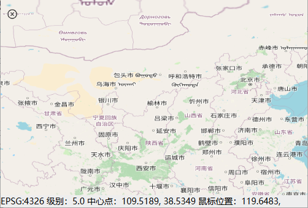
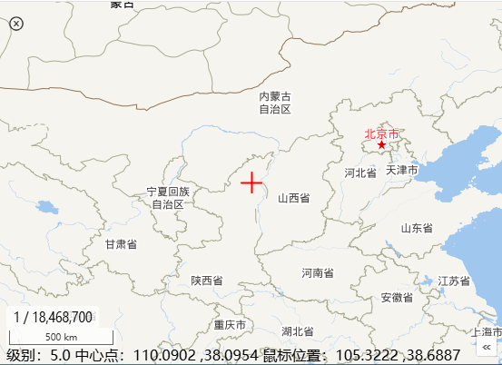
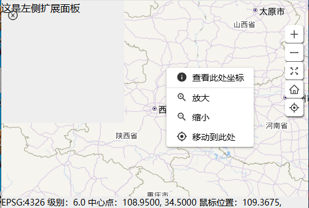
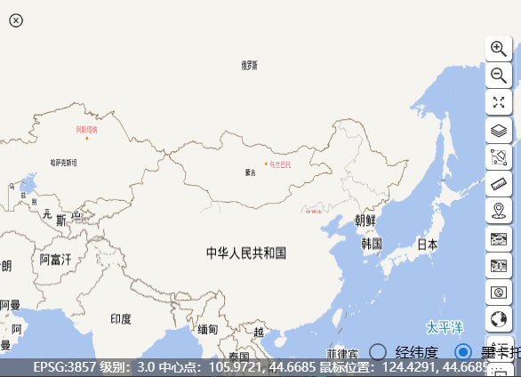
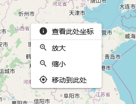

xgis-ol 0.4.x版本以后版本是基于openlayer 10.2.x + ol-ext +quasar +vue开发的进行封装的二维GIS开发库，下面为主要组件和核心类的使用说明。
安装xgis-ol库
pnpm add xgis-ol
pnpm add ol
引入类库和样式
import {XMap } from 'xgis-ol';
import 'xgis-ol/dist/index.css'
绑定初始化地图（最简单的）
<template>
<div id="map"></div>
</template>
<script setup lang="ts">
import { onMounted } from 'vue';
import { XMap } from 'xgis-ol';
import 'xgis-ol/dist/index.css';
import {Tile} from 'ol/layer';
import {OSM} from 'ol/source';
onMounted(() => {
const xmap = new XMap('map', 'mapGroupName');
xmap.initMapView({
zoom: 5,
center: [116.46229441189399, 40.24876149],
minZoom: 1,
maxZoom: 22,
projection: "EPSG:4326",
});
xmap.map.addLayer(new Tile({source:new OSM()}))
});
</script>
<style scoped>
#map {
width: 100%;
height: 100vh;
}
</style>
new XMap 构建XMap对象
调用initMapView初始化地图视图VIEW
xmap.map.addLayer加载地图图层
应用效果：

地图配置IMapConfig定义：
/**
* 地图初始化配置文档
*/
export interface IMapConfig
{
id:string,//地图绑定id
group?:string,//所属组
hasLayerManager?:boolean,//是否需要图层管理对象
isInternet?:boolean,//是否是内网环境
tdtXYZLocalURL?:string,//天地图内网发布地址 模版地址，例如http://192.168.1.122:9000/DataServer?T={layerName}&x={x}&y={y}&l={z}
projInfo?:IProjInfo,
viewOptions:ViewOptions,
layers?:Array<string>,//默认加载的图层（底图）
controls?:Array<IControlOption>,//地图组件
interactions?:Array<IControlOption>,//交互式组件
}
public文件夹下的地图配置文档：DefaultMapConfig.json
{
"id":"map",
"group":"map",
"hasLayerManager":false,
"isInternet":true,
"viewOptions":{
"zoom":5,
"center":[116.46229441189399, 40.24876149],
"minZoom":1,
"maxZoom":22,
"projection":"EPSG:4326",
"multiWorld":true
},
"layers":["vec_c","cva_c"],
"controls":[
{
"key":"target",
"options":{
"visible":true,
"composit":"default"
}
},
{
"key":"overview",
"options":{
"align":"right",
"layers":[0,1]
}
},
{
"key":"scale"
},
{
"key":"scaleline"
}
],
"interactions":[
{
"key":"FishEyeClip",
"options":{
"active":false,
"radius":10,
"layers":[0,1]
}
}
]
}
补充说明：
使用地图配置构建地图示例XMapWidget.vue
路径：src/widgets/olwidgets/map/XMapWidget.vue
<template>
<div class="MainMapWidget">
<div id="map" class="mapstyle">
<ZoomFullBar :xmap="mapRef" :hasLayerTree="hasLayerTree" class="q-gutter-y-xs xmap-zoombar" />
</div>
</div>
</template>
<script setup lang="ts">
import { onMounted, ref } from 'vue';
import { Global, requestGet } from 'xframelib';
import { PrjGridTool, XMap, ZoomFullBar } from 'xgis-ol';
import 'xgis-ol/dist/index.css';
const mapRef=ref<XMap>();
const hasLayerTree=ref(false);
onMounted(async () => {
const configResult = await requestGet('', 'DefaultMapConfig.json').catch(ex => {
Global.Message.warn('加载地图初始化配置DefaultMapConfig.json失败！' + ex.Message);
})
//地图-初始化参数
const mapConfig = configResult.data;
if (mapConfig.projInfo) {
mapConfig.viewOptions.Projection = PrjGridTool.getProjection(mapConfig.projInfo);
}
//地图初始化
const xmap = XMap.initByMapConfig(mapConfig);
mapRef.value=xmap;
hasLayerTree.value=!!xmap.LayerManager;
//全局绑定地图
Global.XMap = xmap;
});
</script>
<style lang="scss" scoped>
.MainMapWidget {
position: absolute;
left: 0px;
top: 0px;
bottom: 0px;
right: 0px;
}
#map {
position: relative;
width: 100%;
height: 100%;
.xmap-zoombar
{
position: absolute;
left:10px;
bottom:80px;
}
}
:deep(.ol-scale-line)
{
bottom:18px;
}
:deep(.ol-mouse-position) {
position: absolute;
top: unset;
left: 8px;
bottom: -2px;
z-index: 10;
}
</style>
使用效果：

OLXMap是对XMap的封装，自带左右两个主面板插槽，具有较大的扩展自由度。默认自带ZoomFullBar组件和ContextMenu组件。
插槽点：
#mapLeftPanel 地图左侧浮动面板，默认为空
#mapRightPanel 地图右侧浮动面板，默认为地图扩展菜单，包括已加载ZoomFullBar组件和进一步扩展工具栏插槽#mapRightExtend。
#mapRightExtend 右侧面板里的插槽，进一步扩展工具栏菜单
使用示例：OLXMapWidget.vue
路径:src/widgets/olwidgets/map/OLXMapWidget.vue
通过hasContextMenu来控制右键菜单是否加载显示，默认是加载显示的。
<template>
<div :style="mainContainStyle">
<OLXMap mapid="map" :hasLayerManager="false" :defaultCenter="[108.95, 34.5]" :initTDTLayers="['vec_c', 'cva_c']"
viewProjection='EPSG:4326' @mapInited="mapInitedHandler" v-if="showMap">
<template #mapLeftPanel>
<!-- 扩展弹框 -->
<div class="leftPanel">
这是左侧扩展面板
</div>
</template>
</OLXMap>
</div>
</template>
<script lang="ts" setup>
import { onMounted, ref } from 'vue';
import { H5Tool } from 'xframelib';
import {OLXMap,XMap} from 'xgis-ol';
import 'xgis-ol/dist/index.css';
const showMap = ref(false);
const mainContainStyle = ref('');
function resizeMap() {
const result = `position:relative;width:100%;height:100vh`;
mainContainStyle.value = result;
};
//获取地图元数据加载地图
let xMap: XMap;
function mapInitedHandler(res) {
xMap = res.xmap;
}
onMounted(() => {
showMap.value = true;
resizeMap();
H5Tool.windowResizeHandler(() => {
resizeMap();
})
});
</script>
<style lang="scss" scoped>
.leftPanel {
background-color: #eee;
width: 200px;
height: 200px;
}
</style>
使用效果：

XMapView组件是在OLXMap基础上进一步封装，默认包括放大缩小MenuToolBar、绘制工具DrawToolBar和量算工具MeasureToolBar。
具有插槽点：
#mapLeftPanelGroup左侧面板
#extendMenuGroup 右侧扩展菜单部分
使用示例：XMapViewWidget.vue,进一步扩展加载了SwipeToolBar、OtherTool,增加了经纬度、墨卡托投影切换功能。
路径：src/widgets/olwidgets/map/XMapViewWidget.vue
<template>
<XMapView
:hasLayerTree="true"
:viewHeight="layoutContentHeight"
:viewProjection="viewProjectionRef"
:viewWidth="layoutContentWidth"
:initTDTLayers="['vec_c','cva_c']"
@mapInited="mapInitedHandler"
v-if="enableXMap"
>
<template #mapLeftPanelGroup>
<div class="datapanel" v-show="dataPanelVisible">
<slot name="dataPanel"></slot>
</div>
</template>
<template #extendMenuGroup>
<div style="position: relative">
<SwipeToolBar :xmap="mapRef" />
</div>
<div style="position: relative; margin-top: 10px">
<OtherTool
:xmap="mapRef"
@drag-box-feature="dragSearchHandler"
></OtherTool>
</div>
</template>
</XMapView>
<div class="prjSelectBar q-gutter-sm">
<q-radio v-model="PrjValue" val="C" label="经纬度" @update:model-value="prjChageHandler" />
<q-radio v-model="PrjValue" val="W" label="墨卡托" @update:model-value="prjChageHandler" />
</div>
</template>
使用效果：

ZoomFullBar组件默认提供了 放大、缩小、图层管理、全屏、默认视图、在线定位功能。
使用参考：ZoomFullControlWidget.vue
作为独立widget使用时，hasFullScreen需设置为false 。
<template>
<div>
<ZoomFullBar :xmap="mapRef" :hasLayerTree="hasLayerTree" :hasFullScreen="false" class="q-gutter-y-sm" />
</div>
</template>
<script setup lang="ts">
import { ZoomFullBar,XMap } from 'xgis-ol';
import { onMounted,ref } from 'vue';
import { Global } from 'xframelib';
const mapRef=ref<XMap>();
const hasLayerTree=ref(false);
onMounted(()=>{
if(Global.XMap)
{
mapRef.value=Global.XMap as XMap;
hasLayerTree.value=!!mapRef.value.LayerManager;
}
})
</script>
ContextMenu右键菜单，自己初始化XMap的需要单独添加ContextMenu进行挂接。
默认使用OLXMap和XMapView构建地图的，自带默认的右键菜单。
默认 右键菜单：
